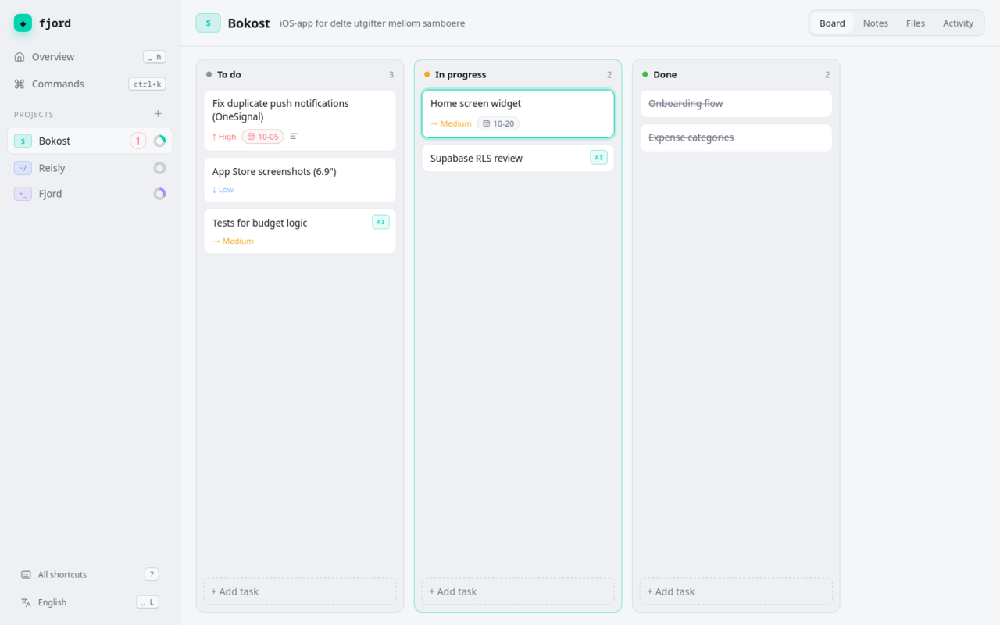
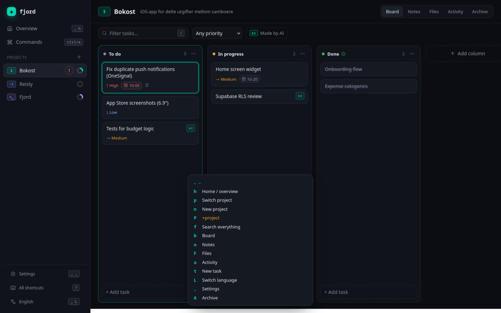

Calm project management, kept on your machine.
Fjord is a quiet desktop app for kanban boards, files and notes. Fast with the keyboard, friendly with the mouse, aware of your Git repos — and your AI agent can help on the same board.

Everything a project needs, nothing it doesn’t.
One file, on your disk.
Projects, tasks, notes and files live in a single SQLite database. No account, no cloud, no telemetry. Back up by copying a folder.
Space, then anything.
A LazyVim-style leader key with a which-key guide, vim motions on the board, a command palette — and every binding is yours to change.
Yours to read and fork.
Rust and Tauri under the hood, MIT or Apache-2.0 on top. A native app that starts fast and stays small.
Feels like your editor.
Press space and Fjord shows you what comes next. Prefer the mouse? Drag cards, right-click for actions, drop files on the window.


Tasks become branches.
Link a project to a repository and Fjord follows your work from task to merge.
- Start a branch from any task — B
- See pull requests with their CI status
- Open a PR straight from the task
- Merged PRs move tasks to done
“A project manager that feels like my editor, not a website.”
Work alongside your agent.
Fjord speaks the Model Context Protocol. Agents can plan, move and complete tasks, branch and open pull requests — but there’s deliberately no delete. Every change shows who made it.
$ claude mcp add fjord -- fjord mcp # “split the push bug into tasks # and open a PR when it’s fixed” AI added “Reproduce duplicate push” AI started fjord/12-fix-push AI opened pull request #14
Free, and yours.
The latest release for every platform. Builds aren’t code-signed yet — on Windows choose “More info → Run anyway”, on macOS right-click the app and choose Open the first time.
Questions
Where is my data stored?
In a single SQLite database on your computer — ~/.local/share/fjord on Linux, %APPDATA%\fjord on Windows, ~/Library/Application Support/fjord on macOS. Nothing is sent anywhere.
Do I need an account?
No. Fjord has no accounts, no sign-in and no telemetry. GitHub integration is optional and uses your existing gh login.
Can my AI agent delete things?
No. The MCP server has no delete tools; agents can archive, which you can always restore. Every change is tagged with who made it.
Is it free?
Yes — free and open source under MIT or Apache-2.0. Contributions are welcome on GitHub.